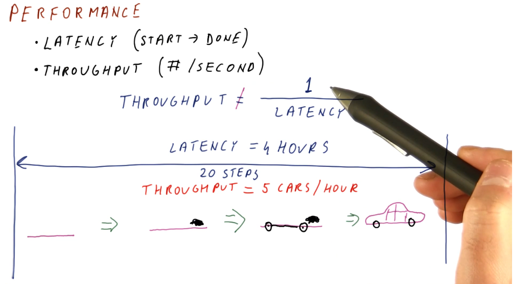
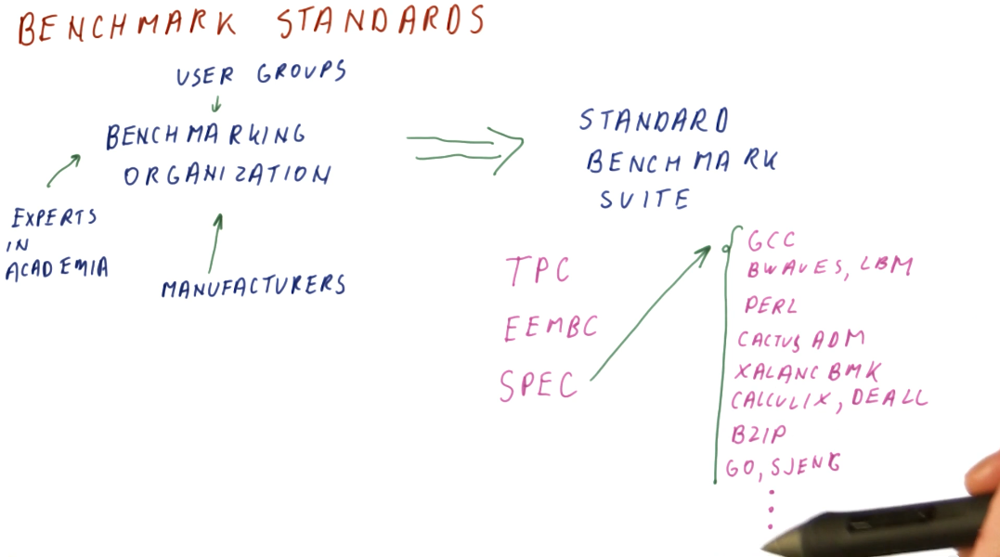
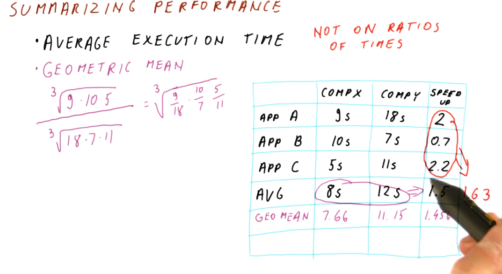
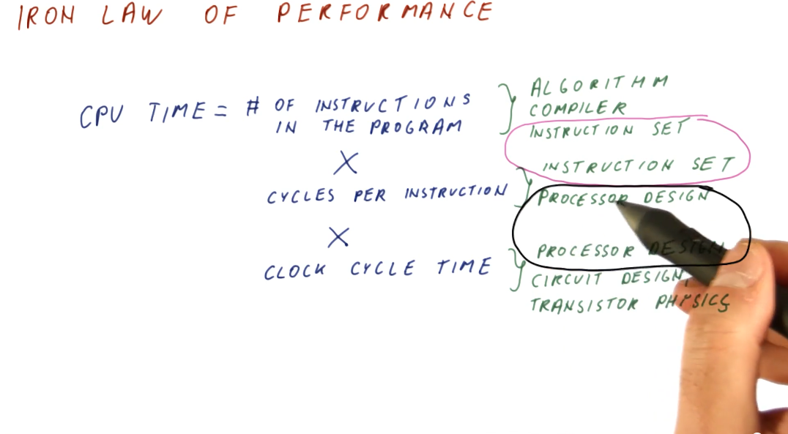
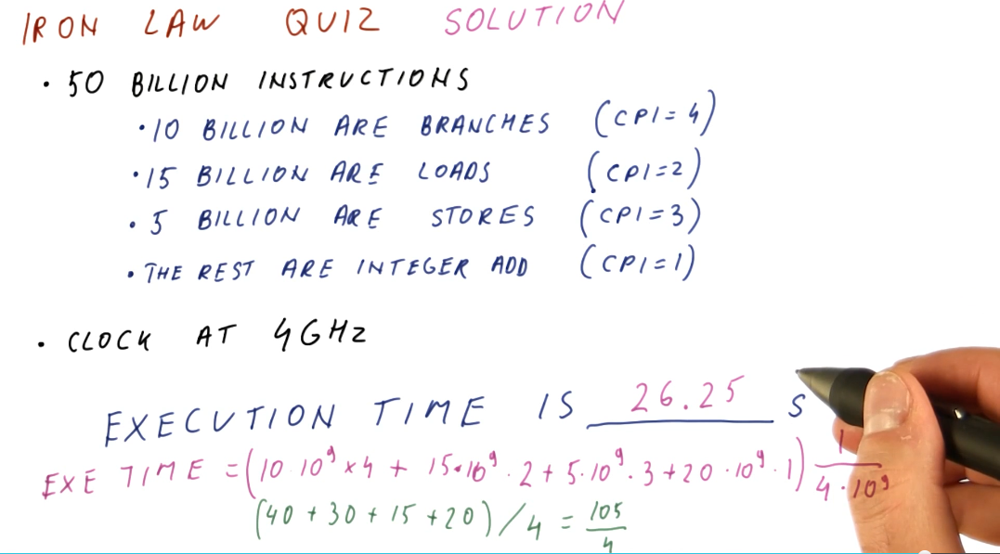
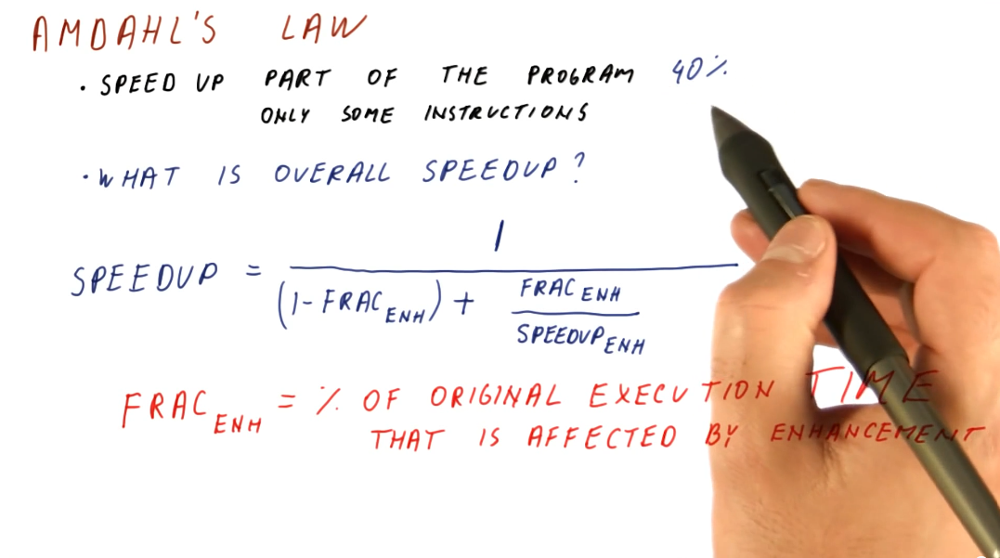
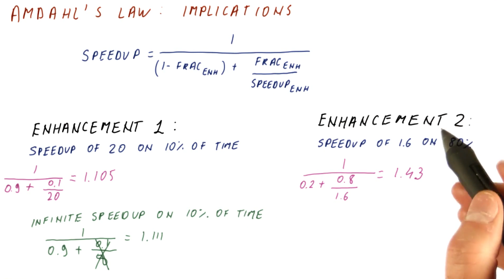
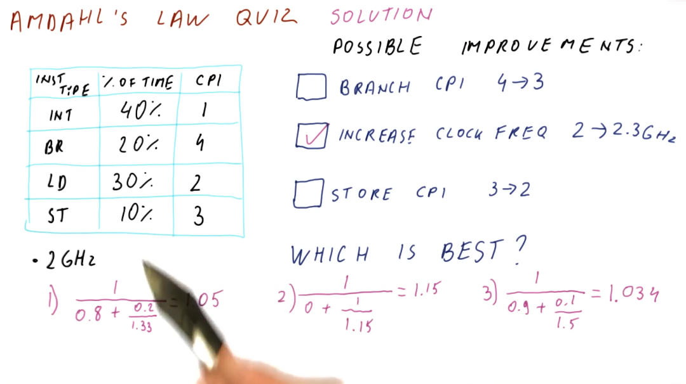
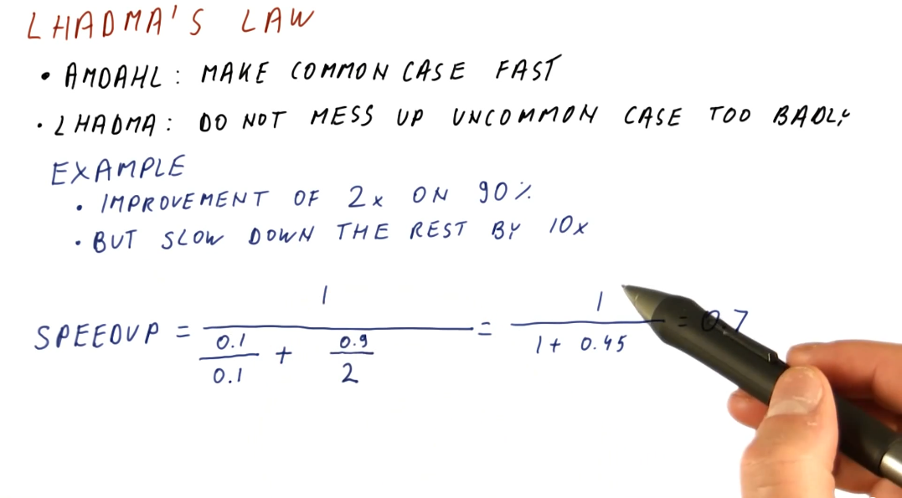
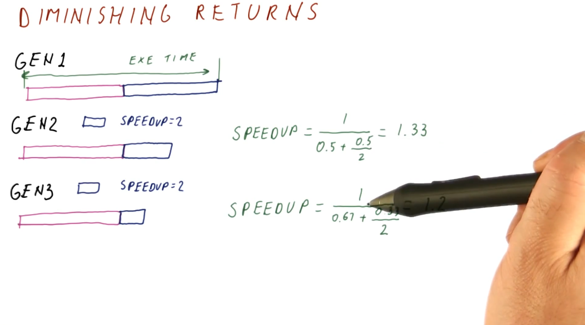

Metrics and Evaluation
This lesson covers latency and throughput, two metrics used to measure computer performance.
Performance
- Latency - the total time it takes for an operation to complete, from start to finish.
- Throughput - not the inverse of latency; because operations can take place concurrently within a pipeline, this can be thought of as the number of operations completed per unit measure of time.
Below is a high-level representation of this concept.

Comparing performance
Knowing how to measure performance, we can now compare the performance of two systems using our metrics. We want to be able to make a definitive statement about the speedup of a system in comparison to another system, basically stating that system x is faster than system y. We can compute this with both latency and throughput, however, our equations are slightly different. Below is an image showing us the equations for computing speedup using our two metrics.

Speedup
A speedup value larger than 1 means we have improved performance. With improved performance, we achieve higher throughput and shorter execution time. A speedup less than 1 means that we have worse performance. When computing speedup, we need to remember that performance is directly proportional to throughput and performance has an inverse relationship with latency.

Measuring performance
What workload do we use to measure performance of different systems? We can't use an actual user workload because:
- Many different users use computers in many different ways with many different programs.
- One workload will not be representative of all users.
- How are we supposed to acquire the workload data?
In order to solve this issue, we use benchmark workloads.
Benchmarks
Benchmarks are programs and input data that users and organizations have agreed upon for use in performance measurements. Usually, we don't have just one benchmark program but a benchmark suite consisting of multiple programs and input data. Each program within a benchmark suite is representative of a type of application.
Types of benchmarks
So what types of benchmarks are commonly used to measure performance? We have:
-
Real applications
- Most representative of real workloads.
- Also the most difficult to setup on new machines. Our testing environment likely doesn't have an operating system, hardware, graphics processors, etc.
-
Kernels
- The most time consuming portions of an application, usually a loop of some sort. We've isolated these processing intensive sections of code to test our machine. Usually good for testing prototypes.
-
Synthetic benchmarks
- Behave similar to kernels but are simpler to compile. We utilize these benchmarks when testing early prototypes of a machine. Usually good for design studies.
-
Peak performance
- Performance that's not based on running against actual code. The theoretical highest number of instructions per second. Usually good for marketing.
Benchmark standard
So how are benchmark suites created? Who makes them and what are the standards? There exist standards organizations that receive input from manufacturers, user groups, and experts in academia and these organizations produce standard benchmark suites. Some well known standard benchmark suites are:
- TPC - Benchmarks used for databases, web servers, data mining, and other transaction processing. [1]
- EEMBC - Used for embedded processing. [2]
- SPEC - Used to evaluate engineering work stations and raw processors. SPEC encompasses a large set of workloads, trying to cover a variety of uses for processors in high performance systems. A breakdown of these workloads is in the image below. [3]

Summarizing performance
To summarize performance, we are looking for the average execution time. A demonstration on how to calculate this is shown below. We should refrain from averaging the speedups for each application tested - averaging ratios will not provide useable data to summarize performance. In order to acquire the average speedup, we need to use the geometric mean for the execution times of each computer.

Iron Law of performance
Processor time (CPU time) can be expressed as:
(instructions/program) * (cycles/instruction) * (seconds/cycles)
So why do we think about these components of processor time instead of just measuring processor time directly? These three components allow us to think about the different aspects of computer architecture.
(instructions/program)- influenced by the algorithm used to create the program, the compiler used to interpret and generate the program, and the instruction set being used.(cycles/instruction)- influenced by the instruction set being used, and the processor design.(seconds/cycle)- influenced by the processor design, circuit design, and transistor physics.
Computer architecture primarily focuses on instruction set and processor design, and good designs of these two aspects attempts to balance their effects on CPU time.

Iron Law for unequal instruction times
It's pretty simple to calculate CPU times when we assume that all instructions for a program will take the same amount of cycles to execute. This isn't always the case, however. We need to be able to sum all the cycles for each type of instruction before we multiply this with our time per cycle. Below is a representation of this concept, showing us how to calculate a more realistic CPU time.

Below is an example problem in which we calculate the sum of cycles for a program in order to determine the CPU time.

Amdahl's Law
This law is useful when we need to calculate the overall speedup of the entire program, but we only enhanced a fraction of the program. Below is an image that attempts to explain the equation for Amdahl's Law, a description of each variable in the equation is provided:
(1 - frac_enh)- the fraction of the program that wasn't enhanced.frac_enh- the fraction of the program that was enhanced.speedup_enh- the speedup achieved due to the enhancement.
It's very important to understand that frac_enh is a percentage of the
original execution time that is affected by the enhancement.

Implications
It's important to aim for enhancements that achieve a speedup on a larger percentage of execution time for a program. This is demonstrated mathematically below.

Below is an example of how to use Amdahl's Law to compare multiple possible improvements.

Lhadma's Law
This law is jokingly used to express the opposite of Amdahl's Law. While Amdahl's Law says to optimize for the common case, Lhadma's warns us that we should avoid attempting to optimize too much at the expense of other parts of our performance. An example is provided below.

Diminishing returns
This concept covers the idea that as computer architects, we need to continuously review what needs to be enhanced within a system instead of continuously enhancing the same portion of a system. This concept stems from Amdahl's Law, as it describes that, eventually, the enhanced portion of a system will become smaller as we apply enhancements across generations. We will achieve a diminished speedup if we continue to enhance the same portion of the system. We need to continually reassess what is the common case when conducting our enhancements. Below is a high level representation of this idea.
